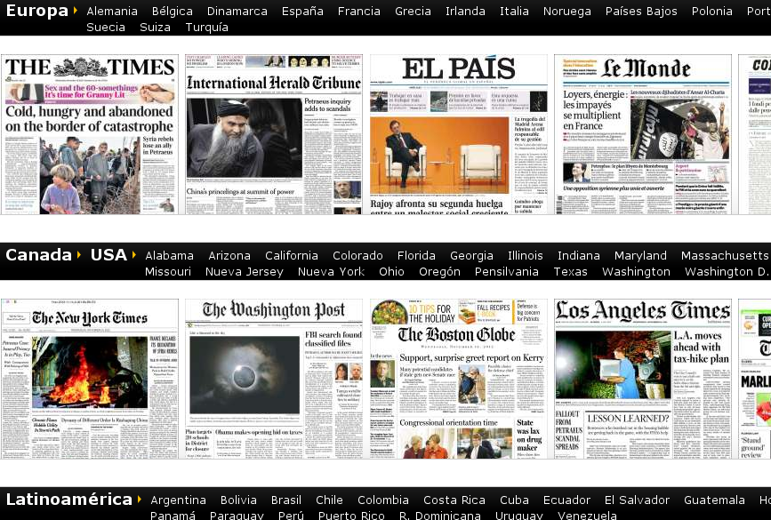
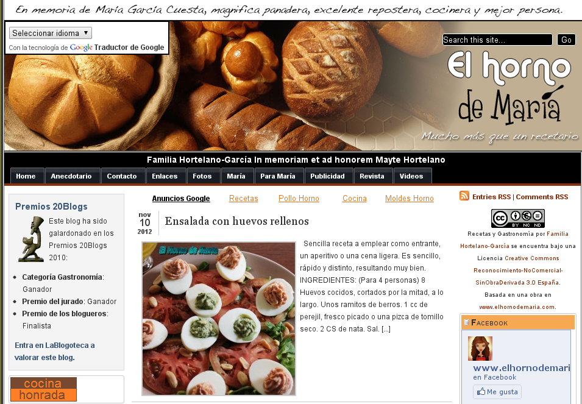

1. Introducción
La práctica de hoy consistirá en hacer la primera toma de contacto con la web. Visitaremos un montón de páginas y veremos cómo acceder a los recursos en línea con un navegador web.
2. Navegar por páginas web.
Os propongo varias páginas web que vamos a ir visitando, cada una con una temática u objetivo diferente. Vamos a ello.
Página web de "El Tiempo" de Jose Antonio Maldonado

Empezaremos la navegación con una página web de previsión meteorológica muy bien estructurada:
¿Sabrías encontrar en esa página el tiempo que va a hacer mañana en Castellón de la Plana, o en tu población?
Página web de "Kiosko.net"
Vamos a navegar ahora por una página web que nos centraliza todos los periódicos tanto de tirada local, nacional, como internacional.
Intenta encontrar por la página la información de un periódico local, El Mediterraneo, o el Levante (o el que quieras).
Página web de "El horno de María"
Veamos ahora una página web que ha creado una persona, como podemos ser cualquiera de nosotros, y que pone a disposición de todo el mundo una serie de recetas de cocina la mar de sabrosas.
Lee alguna receta de la que nos propone el blog.